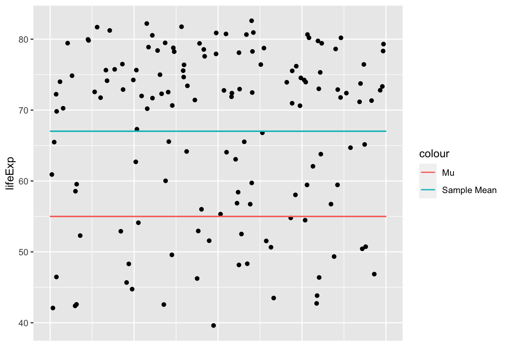
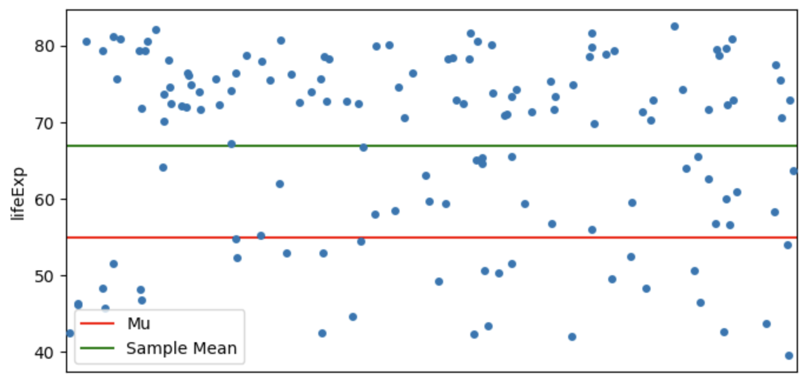
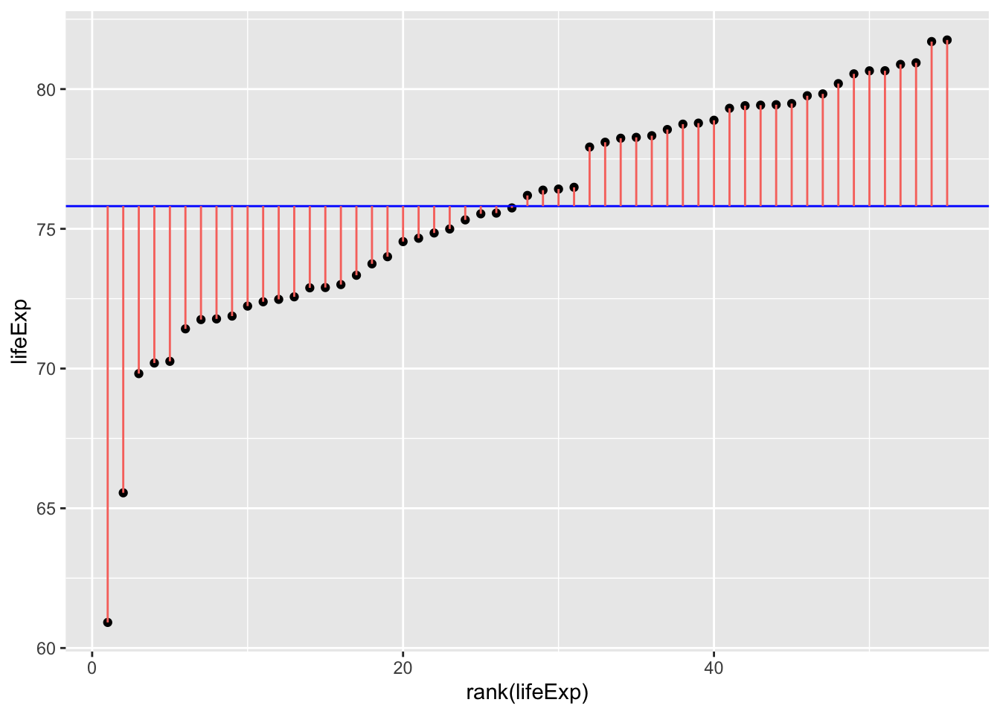
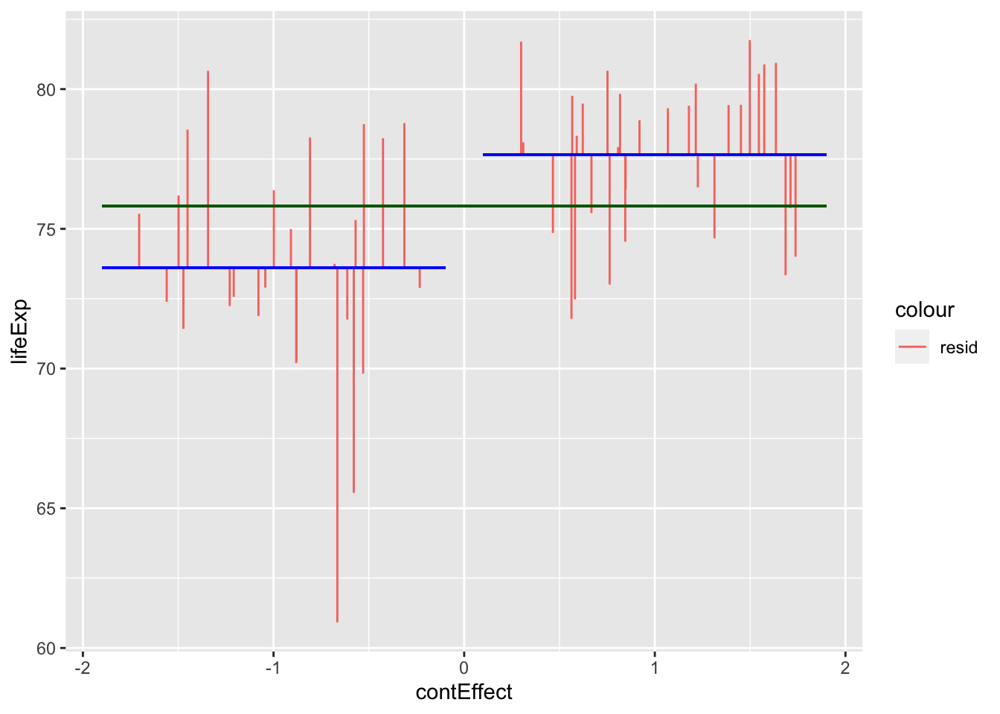
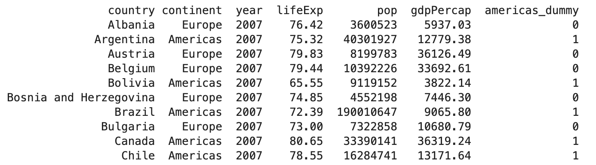

T-Tests(incomplete)
Course Overview
Red means that the page does not exist yet
Orange means that the page is started
In all general linear models you are trying to compare how much of the variance is explained by a model compared to what’s not being explained by a model. In short
\[ \frac{var_{explained}}{var_{unexplained}} = \frac{SS_{explained}}{SS_{unexplained}} \]
For each type of t-test, the way we calculate this is slightly different:
One-Sample t-tests
GLM approach
One sample t-tests try to explain whether variance of data is better explained around one specific value (sample mean) compared to another (previously assumed value). For example, imagine that you wanted to test whether life expectancy is higher than 55 across the world:
Your \(\mu\) would be 55. This can be thought of as the assumed population mean that we want to use our sample to test.
Your \(\bar{x}\) would be the sample mean.
Let’s visualise these values using gapminder data from 2007:
library(ggplot2)
library(gapminder)
gapminder_2007 <- subset(
gapminder, # the data set
year == 2007
)
ggplot(gapminder_2007, aes(x=year,y=lifeExp)) +
geom_jitter() +
xlab("") +
theme(axis.text.x = element_blank()) +
theme(axis.ticks.x = element_blank()) +
geom_segment(
aes(
x = 2006.6,
xend = 2007.4,
y = 55,
yend = 55,
color = "Mu"
)
) +
geom_segment(
aes(
x = 2006.6,
xend = 2007.4,
y = mean(lifeExp),
yend = mean(lifeExp),
color = "Sample Mean"
)
)
# load the gapminder module and import the gapminder dataset
from gapminder import gapminder
# import matplotlib
import matplotlib.pyplot as plt
import seaborn as sns
# create a new data frame that only focuses on data from 2007
gapminder_2007 = gapminder.loc[gapminder['year'] == 2007]
# Create the plot
plt.figure(figsize=(8, 4))
# create the scatterplot with some jitter
sns.stripplot(x="year", y='lifeExp', data=gapminder_2007, dodge=True, jitter=0.5)
# add an horizontal line for Mu
plt.axhline(y=55, color='r', linestyle='-', label='Mu')
# add an horizontal line for the mean of 'lifeExp'
plt.axhline(y=gapminder_2007['lifeExp'].mean(), color='g', linestyle='-', label='Sample Mean')
# remove the label on the x-axis
plt.xlabel("")
# remove the tick on the x-axis
plt.xticks([])
# add the legend
plt.legend()
# show the plot
plt.show()
We want to create a model that explains any variance around the population mean (mu or \(\mu\)). The sample mean could be modeled as such:
\[ y = \bar{y} + e \]
Y is the data point value you are trying to predict. Note that for this formula you will always have the same predicted outcome (the mean).
\(\bar{y}\) is mean of all y data points. You are only interested in whether predicting y based on y’s mean captures a significant amount of the variance of the y-values around the \(\mu\).
\(e\) is the error, i.e. the residuals that the module do not predict effectively.
If the sample mean is a useful model, then it will explain a large proportion of the variance around the “population” mean (and will also suggested that there is significant reason to reject the population mean). The total variance using sum of squares is thus:
\[ SS_{total} = \sum(x_i-\mu)^2 \]
Which for the above data would give us:
sum((gapminder_2007$lifeExp - 55)^2)[1] 41025.16# import numpy
import numpy as np
# calculate the squared dfference
np.sum((gapminder_2007['lifeExp'] - 55) ** 2)41025.157014So your explained variance by this model is any difference between the Mu (\(\mu\)) and the sample mean (\(\bar{x}\)). To summarise this using sum of squares, for each data point you subtract the two from each other and square them, as this difference is what we can explain of variance away from the MU:
\[ SS_{explained} = N * (\mu - \bar{x})^2 \]
Which for the above data would give us:
length(gapminder_2007$lifeExp) * (55- mean(gapminder_2007$lifeExp))^2[1] 20473.3len(gapminder_2007['lifeExp']) *( 55 - gapminder_2007['lifeExp'].mean())**220473.303823352093Unexplained variance would be the residuals around the sample mean, as this is variance that is not explained by the model. Conveniently, we can calculate the sum of squared around the sample mean quite elegantly:
\[ SS_{unexplained} = \sum(x_i-\bar{x})^2 \]
Which for the above data would give us
sum((gapminder_2007$lifeExp - mean(gapminder_2007$lifeExp))^2)[1] 20551.85np.sum((gapminder_2007['lifeExp'] - gapminder_2007['lifeExp'].mean()) ** 2)20551.853190647882In general linear models we calculate \(F\)-values as a statistic of how effective a model is at explaining the variance. These \(F\)-values use degrees of freedom (see here for a reminder) to adjust for
So the F-value should be:
\[ F = \frac{SS_{explained}/df_{explained}}{SS_{unexplained}/df_{unexplained}} = \frac{20473.3/(Predictors)}{20551.85/(N-1)} = \frac{20473.3/1}{20551.85/141} \]
f_value = (length(gapminder_2007$lifeExp) * (55- mean(gapminder_2007$lifeExp))^2) / (
(sum((gapminder_2007$lifeExp - mean(gapminder_2007$lifeExp))^2))/(length(gapminder_2007$lifeExp)-1)
)
f_value[1] 140.4611# Calculate the sum of squared differences between each value in 'lifeExp' and the mean
ss_between = len(gapminder_2007['lifeExp']) * (55 - gapminder_2007['lifeExp'].mean()) ** 2
# Calculate the sum of squared differences within groups
ss_within = np.sum((gapminder_2007['lifeExp'] - gapminder_2007['lifeExp'].mean()) ** 2)
# Calculate the degrees of freedom for between groups and within groups
df_between = 1
df_within = len(gapminder_2007['lifeExp']) - 1
# Calculate the F-statistic
f_value = (ss_between / df_between) / (ss_within / df_within)
print(f_value)140.46109673488004F-values are squares of t-values, so let’s see if this is true here also:
sqrt(f_value)[1] 11.85163t.test(gapminder_2007$lifeExp, mu=55)
One Sample t-test
data: gapminder_2007$lifeExp
t = 11.852, df = 141, p-value < 2.2e-16
alternative hypothesis: true mean is not equal to 55
95 percent confidence interval:
65.00450 69.01034
sample estimates:
mean of x
67.00742 from scipy import stats
# Calculate the square root of the F-value
np.sqrt(f_value)11.851628442323022# Perform a t-test
t_statistic, p_value = stats.ttest_1samp(gapminder_2007['lifeExp'], popmean=55)
print("t-statistic:", t_statistic)
print("p-value:", p_value)t-statistic: 11.851628442323024
p-value: 6.463174215427706e-23GLM vs. conventional formula
Great. So now that we’ve highlighted the GLM approach works for t-tests, can we see how our formula for a GLM simplifies to the formula we usually use for one-sample t-tests:
\[ T = \sqrt{F} = \sqrt{\frac{SS_{exp}/df_{exp}}{SS_{unexp}/df_{unexp}}} = \sqrt{\frac{N * (\mu - \bar{x})^2/(levelsOfPredictors - 1)}{\sum(x_i-\bar{x})^2/(N-1)}} = \\ \sqrt{\frac{N * (\mu - \bar{x})^2/(2-1)}{\sigma^2}} = \frac{\sqrt{N * (\mu - \bar{x})^2}}{\sqrt{\sigma^2}} = \frac{\sqrt{(\mu - \bar{x})^2}}{\sigma/\sqrt{N}} = \frac{\mu - \bar{x}}{\sigma/\sqrt{N}} \] where:
- T is the t-value
- F is the f-value
- \(SS_{exp}\) is the sum of squares of the data explained by the model
- \(SS_{unexp}\) is the sum of squares of the data not explained by the model (i.e. the residuals)
- \(df_{exp}\) is the degrees of freedom for the model. As there is only one predictor (the sample mean) and it’s only got 2 levels (1 or 0, however, in all cases the model is comparing the data to the mean, so it’s less intuitive that there are 2 levels).
Paired samples t-tests
Paired samples t-tests can be approached like 1-sample t-tests, but you first of all need to collapse the data to have a single variable to compare to a \(\mu\) of zero. Let’s do this for gapminder data, comparing life expectancies between 2002 and 2007:
gapminder_2002_2007_life_exp <- gapminder$lifeExp[gapminder$year == 2007] - gapminder$lifeExp[gapminder$year == 2002]
t.test(gapminder_2002_2007_life_exp, mu = 0)
One Sample t-test
data: gapminder_2002_2007_life_exp
t = 14.665, df = 141, p-value < 2.2e-16
alternative hypothesis: true mean is not equal to 0
95 percent confidence interval:
1.135561 1.489439
sample estimates:
mean of x
1.3125 gapminder_2002_2007_life_exp = life_exp_2007.reset_index(drop=True) - life_exp_2002.reset_index(drop=True)
t_statistic, p_value = stats.ttest_1samp(gapminder_2002_2007_life_exp, popmean=0)
print("t-statistic:", t_statistic)
print("p-value:", p_value)t-statistic: 14.664513524875451
p-value: 3.738316746290281e-30The above suggests that life expectancy was significanctly different. Let’s see if we get the exact same value when we use a paired t-test in R:
t.test(gapminder$lifeExp[gapminder$year == 2007],gapminder$lifeExp[gapminder$year == 2002], paired=T)
Paired t-test
data: gapminder$lifeExp[gapminder$year == 2007] and gapminder$lifeExp[gapminder$year == 2002]
t = 14.665, df = 141, p-value < 2.2e-16
alternative hypothesis: true mean difference is not equal to 0
95 percent confidence interval:
1.135561 1.489439
sample estimates:
mean difference
1.3125 # Filter data for the year 2007
life_exp_2007 = gapminder[gapminder['year'] == 2007]['lifeExp']
# Filter data for the year 2002
life_exp_2002 = gapminder[gapminder['year'] == 2002]['lifeExp']
# Perform a paired t-test
t_statistic, p_value = stats.ttest_rel(life_exp_2007, life_exp_2002)
print("T-statistic:", t_statistic)
print("P-value:", p_value)t-statistic: 14.664513524875451
p-value: 3.738316746290281e-30Looks identical. Let’s compare formulas to see why this is:
\[ t_{paired} = \frac{\bar{x_1} - \bar{x_2}}{\sigma_{pooled}/\sqrt{N}} = \frac{\bar{x_3}}{\sigma_{pooled}/\sqrt{N}} \]
Where
\(\bar{x_1}\) is the mean of condition 1
\(\bar{x_2}\) is the mean of condition 2
\(\bar{x_3}\) is the mean of the result you get when you subtract condition 2 from condition 1 for each participant, i.e. \(mean(x_1-x_2)\).
\[ \sigma_{pooled} = \sqrt{\frac{\sigma_1^2 + \sigma_2^2}{2}} OR \frac{\sum(x_1 - x_2)^2}{N-1} \] One way effectively gets the average of the standard deviations of condition and 1. The second way gets the standard deviation of the differences between conditions 1 and 2. Both give you the same outcome.
\(N\) is the number of participants
You can rewrite the above formula to compare \(\bar{x_3}\) to \(\mu\), as we know \(\mu\) is zero, which would make this formula (effectively) identical to the one above for one-sample t-tests: $$
\[ \frac{\bar{x_3} - \mu}{\sigma_{pooled}/\sqrt{N}} \]
Independent Samples t-tests
GLM approach
T-tests are restricted to comparisons between 2 conditions/groups, so we will restrict the Gapminder data to allow a comparison between 2 continents. To see if life expectancy was different if you are born in Europe compared to the Americas, let’s first check what the sum of squares is when you just use the mean as the model of life expectancy across these contents (so we’re not separating by continent yet):
gapminder_americas_europe <- subset(
gapminder_2007, # the data set
continent == "Europe" | continent == "Americas"
)
ggplot(
gapminder_americas_europe, aes(x=rank(lifeExp), y=lifeExp)
) +
geom_point() +
geom_hline(yintercept = mean(gapminder_americas_europe$lifeExp), color="blue") +
geom_segment(
aes(
xend = rank(lifeExp),
yend = mean(lifeExp),
color = "resid"
)
) +
theme(legend.position = "none")
gapminder_americas_europe = gapminder_2007.loc[(gapminder_2007['continent'] == "Europe") | (gapminder_2007['continent'] == "Americas")]
gapminder_americas_europe["lifeExp_rank"] = gapminder_americas_europe["lifeExp"].rank()
fig, ax = plt.subplots(figsize =(7, 5))
#scatter plot for the dataset
plt.scatter(gapminder_americas_europe["lifeExp_rank"], gapminder_americas_europe["lifeExp"], color='black', s=10)
# only one line may be specified; full height
plt.axhline(y=gapminder_americas_europe["lifeExp"].mean(), color='blue', ls='-')
plt.vlines(x=gapminder_americas_europe["lifeExp_rank"],ymin=gapminder_americas_europe["lifeExp"], ymax=gapminder_americas_europe["lifeExp"].mean(), colors='red', lw=0.5)
# add title on the x-axis
plt.xlabel("rank(lifeExp)")
# add title on the y-axis
plt.ylabel("lifeExp")
plt.show()
Once we square the errors in the pink lines above, we’ll get the squares:
ggplot(
gapminder_americas_europe,
aes(
x=rank(lifeExp),
# y is the square of the difference between each data point and the mean across all data poins. Once these are summed you will get the sum of squares.
y=(lifeExp-mean(lifeExp))^2
)
) +
geom_point() +
geom_segment(
aes(
xend = rank(lifeExp),
yend = 0,
color = "resid"
)
) +
theme(legend.position = "none")
sum((gapminder_americas_europe$lifeExp - mean(gapminder_americas_europe$lifeExp))^2)[1] 953.4478
fig, ax = plt.subplots(figsize =(7, 5))
#scatter plot for the dataset
plt.scatter(gapminder_americas_europe["lifeExp_rank"], (gapminder_americas_europe["lifeExp"]-gapminder_americas_europe["lifeExp"].mean())**2, color='black', s=10)
# only one line may be specified; full height
plt.vlines(x=gapminder_americas_europe["lifeExp_rank"],ymin=0, ymax=(gapminder_americas_europe["lifeExp"]-gapminder_americas_europe["lifeExp"].mean())**2, colors='red', lw=0.5)
# add title on the x-axis
plt.xlabel("rank(lifeExp)")
# add title on the y-axis
plt.ylabel("(Life Expectancy - mean(Life Expectancy))^2")
plt.show()
sum((gapminder_americas_europe["lifeExp"]-gapminder_americas_europe["lifeExp"].mean())**2)
953.4477649818183And when you add all of these together:
\[ SumOfSquares = \sum(Y_i-\bar{Y})^2 = 953.4478 \]
So if the model we create for a t-test would result in a smaller sum of squares then that suggests it’s a more precise model for estimating life expectancy than simply using the mean as a model. This is because this would mean there’s less error in this model. Let’s model this using a t-test. For this we will need to effect code continent:
# create a column to place 1 or -1 for each row dependent on the country
contEffect = NA
contEffect[gapminder_americas_europe$continent == "Europe"] = 1
contEffect[gapminder_americas_europe$continent == "Americas"] = -1
gapminder_americas_europe = cbind(contEffect,gapminder_americas_europe)
rmarkdown::paged_table(head(gapminder_americas_europe))gapminder_americas_europe = gapminder_2007.loc[(gapminder_2007['continent'] == "Europe") | (gapminder_2007['continent'] == "Americas")]
gapminder_americas_europe["contEffect"]=0
gapminder_americas_europe["contEffect"].loc[(gapminder_americas_europe['continent'] == "Europe")]=1
gapminder_americas_europe["contEffect"].loc[(gapminder_americas_europe['continent'] == "Americas")]=-1
cols = list(gapminder_americas_europe.columns)
cols = list(gapminder_americas_europe.columns)
cols = cols[len(cols)-1:len(cols):1]+cols[0:-1:1]
gapminder_americas_europe = gapminder_americas_europe[cols]
print(tabulate(gapminder_americas_europe[:6], headers=gapminder_americas_europe.head(), tablefmt="fancy_grid",showindex=False))
Now that we have effect coded the continent, we can create a new model to try to predict an individual’s life expectancy based on which continent they are from
\[ Y = intercept + \beta * effectVariable + Error \]
Which in our case means:
\[ lifeExp = mean(lifeExp) + \beta * contEffect + Error \]
Y being the predicted life expectancy.
\(\bar{Y}\) being the mean life expectancy regardless of continent. For a t-test this is also the \(intercept\).
\(\beta\) being how much to adjust the prediction based on which continent the person is from
\(contEffect\) being 1 (Europe) or -1 (Americas) to reflect which continent the participant is from
\(Error\) being any error in the prediction not captured by the model
To get the \(intercept\) and \(\beta\) for the above formula let’s use linear model functions:
continent_ttest <- lm(lifeExp ~ contEffect, gapminder_americas_europe)
continent_ttest$coefficients[1] (Intercept)
75.62836 continent_ttest$coefficients[2]contEffect
2.02024 gapminder_americas_europe$t_fit = continent_ttest$coefficients[1] + # intercept
continent_ttest$coefficients[2] * # gradient
gapminder_americas_europe$contEffect
ggplot(gapminder_americas_europe, aes(x = contEffect, y = lifeExp)) +
geom_segment(
position = "jitter",
#arrow = arrow(length = unit(0.01, "npc"),ends = "first"),
aes(
xend = contEffect,
yend = t_fit,
color = "resid"
)
) +
geom_segment(aes(
x = -1.9,
xend = -.1,
y = -1 * continent_ttest$coefficients[2] + continent_ttest$coefficients[1],
yend = -1 * continent_ttest$coefficients[2] + continent_ttest$coefficients[1]),
color = "blue"
) +
geom_segment(
aes(
x = 0.1,
xend = 1.9,
y = 1 * continent_ttest$coefficients[2] + continent_ttest$coefficients[1],
yend = 1 * continent_ttest$coefficients[2] + continent_ttest$coefficients[1]
),
color = "blue"
) +
geom_segment(
aes(
x = - 1.9,
xend = 1.9,
y = mean(lifeExp),
yend = mean(lifeExp)
),
color = "dark green"
)
from scipy import stats
# convert 'contEffect' to type category
gapminder_americas_europe['contEffect'] = gapminder_americas_europe['contEffect'].astype('category')
# lm 'contEffect' ~ 'lifeExp'
continent_ttest = stats.linregress(gapminder_americas_europe['contEffect'],gapminder_americas_europe['lifeExp'])
# show results of lm
continent_ttestLinregressResult(slope=2.020240000000001, intercept=75.62836, rvalue=0.4832076439158285, pvalue=0.00018637488941351192, stderr=0.502794193121279, intercept_stderr=0.5027941931212789)gapminder_americas_europe["contEffect"]=0
gapminder_americas_europe["contEffect"].loc[(gapminder_americas_europe['continent'] == "Europe")]=1
gapminder_americas_europe["contEffect"].loc[(gapminder_americas_europe['continent'] == "Americas")]=-1
gapminder_americas_europe['t_fit'] = continent_ttest.intercept +continent_ttest.slope * gapminder_americas_europe['contEffect']
gapminder_americas_europe['t_res_square'] = (gapminder_americas_europe['lifeExp'] - gapminder_americas_europe['t_fit'])**2
# calculate 'lifeExp' mean for 'contEffect' ==-1
m1 = gapminder_americas_europe["lifeExp"][gapminder_americas_europe['contEffect'] == -1].mean()
# calculate 'lifeExp' mean for 'contEffect' ==1
m2 = gapminder_americas_europe["lifeExp"][gapminder_americas_europe['contEffect'] == 1].mean()
# repeat lifeExp' mean for 'contEffect' ==-1
m11=np.repeat(m1, len(gapminder_americas_europe["lifeExp"][gapminder_americas_europe['contEffect'] == -1]), axis=0)
# repeat lifeExp' mean for 'contEffect' ==1
m22=np.repeat(m2, len(gapminder_americas_europe["lifeExp"][gapminder_americas_europe['contEffect'] == 1]), axis=0)
# create x coordinates for 'contEffect' ==-1
x1 = np.arange(-1.98, -.05, 0.08)
# create x coordinates for 'contEffect' ==1
x2 = np.arange(0.05, 1.98, 0.065)
fig, ax = plt.subplots(figsize =(10, 7))
ax.set_ylim([60, 80])
plt.axhline(y=gapminder_americas_europe["lifeExp"].mean(), color='green', ls='-')
plt.hlines(y=m1,xmin=-1.99, xmax=-.04, colors='blue', lw=0.5)
plt.hlines(y=m2,xmin=1.99, xmax=.04, colors='blue', lw=0.5)
plt.vlines(x= x1,ymin=gapminder_americas_europe["lifeExp"][gapminder_americas_europe['contEffect'] == -1], ymax=m11, colors='red', lw=0.5)
plt.vlines(x= x2,ymin=gapminder_americas_europe["lifeExp"][gapminder_americas_europe['contEffect'] == 1], ymax=m22, colors='red', lw=0.5)
# add title on the x-axis
plt.xlabel("contEffect")
# add title on the y-axis
plt.ylabel("lifeExp")
plt.show()
Countries in the americas are dummy coded as -1 and countries in Europe are dummy coded as 1. Note that jittering has been used to help visualise variation within continents, and so all countries in Americas had a \(contEffect\) score of -1, even if the jittering above makes it look like participants from Europe had slightly different \(contEffect\) values to each other.
So now that we’ve visualised the predictions and the error, lets summarise these errors with their sum of squares:
#temp_summary <- summary(lm(lifeExp ~ contEffect, data = gapminder_americas_europe))
summary(aov(lifeExp ~ contEffect, data = gapminder_americas_europe)) Df Sum Sq Mean Sq F value Pr(>F)
contEffect 1 222.6 222.62 16.14 0.000186 ***
Residuals 53 730.8 13.79
---
Signif. codes: 0 '***' 0.001 '**' 0.01 '*' 0.05 '.' 0.1 ' ' 1# between
overall_mean <- mean(gapminder_americas_europe$lifeExp)
europe_mean <- mean(gapminder_americas_europe$lifeExp[gapminder_americas_europe$contEffect == 1])
america_mean <- mean(gapminder_americas_europe$lifeExp[gapminder_americas_europe$contEffect == -1])
ss_between <-
sum(gapminder_americas_europe$contEffect == 1) * (europe_mean - overall_mean)^2 +
sum(gapminder_americas_europe$contEffect == -1) * (america_mean - overall_mean)^2
top_half = ss_between
ss_within = (
sum((gapminder_americas_europe$lifeExp[gapminder_americas_europe$contEffect == 1] - europe_mean)^2) +
sum((gapminder_americas_europe$lifeExp[gapminder_americas_europe$contEffect == -1] - america_mean)^2)
)
bottom_half = (ss_within/(length(gapminder_americas_europe$lifeExp) - 2))
top_half/bottom_half[1] 16.14453# Compare with a t-test
t.test(
gapminder_americas_europe$lifeExp[gapminder_americas_europe$contEffect == 1],
gapminder_americas_europe$lifeExp[gapminder_americas_europe$contEffect == -1],
var.equal = T
)
Two Sample t-test
data: gapminder_americas_europe$lifeExp[gapminder_americas_europe$contEffect == 1] and gapminder_americas_europe$lifeExp[gapminder_americas_europe$contEffect == -1]
t = 4.018, df = 53, p-value = 0.0001864
alternative hypothesis: true difference in means is not equal to 0
95 percent confidence interval:
2.023525 6.057435
sample estimates:
mean of x mean of y
77.64860 73.60812 4.018^2[1] 16.14432# look at a t-distribution compared to an f-distributionimport statsmodels.api as sm
from statsmodels.formula.api import ols
model = ols('lifeExp ~ contEffect', data = gapminder_americas_europe).fit()
aov_table = sm.stats.anova_lm(model, typ=2)
aov_table
# between
overall_mean = gapminder_americas_europe['lifeExp'].mean()
europe_mean = gapminder_americas_europe['lifeExp'][gapminder_americas_europe['contEffect'] == 1].mean()
america_mean = gapminder_americas_europe['lifeExp'][gapminder_americas_europe['contEffect'] == -1].mean()
ss_between =(sum(gapminder_americas_europe['contEffect'] == 1) * (europe_mean - overall_mean)**2) + (sum(gapminder_americas_europe['contEffect'] == -1) * (america_mean - overall_mean)**2)
top_half = ss_between
ss_within = (sum((gapminder_americas_europe['lifeExp'][gapminder_americas_europe['contEffect'] == 1] - europe_mean)**2)+ sum((gapminder_americas_europe['lifeExp'][gapminder_americas_europe['contEffect'] == -1] - america_mean)**2))
bottom_half = (ss_within/(len(gapminder_americas_europe['lifeExp']) - 2))
top_half/bottom_half
# Compare with a t-test
from scipy.stats import ttest_ind
t_test = ttest_ind(gapminder_americas_europe['lifeExp'][gapminder_americas_europe['contEffect'] == 1],gapminder_americas_europe['lifeExp'][gapminder_americas_europe['contEffect'] == -1])
t_test
t_test.statistic **2
Ttest_indResult(statistic=4.018025720342183, pvalue=0.00018637488941352037)
16.144530689331322So the new sum of squares is 730.8276, which is smaller than it was when we just used the mean regardless of continent (953.4478) which also summarises the total variance (around the mean). In fact, we can use these 2 numbers to calculate the \(r^2\) value (i.e. what proportion of the variance around the mean is explained by the model). The amount of variance explained by the model can be calculated by:
\[ totalSumOfSquares - modelSumOfSquares = totalError - modelError \]
This allows us to calculate an r-value and thus a p-value:
this_r2 = 1 - sum(gapminder_americas_europe$t_res_squared)/sum((gapminder_americas_europe$lifeExp - mean(gapminder_americas_europe$lifeExp))^2)
this_r = sqrt(this_r2)
this_r[1] 1t.test(
gapminder_americas_europe$lifeExp[gapminder_americas_europe$contEffect == 1],
gapminder_americas_europe$lifeExp[gapminder_americas_europe$contEffect == -1],
var.equal = T
)
Two Sample t-test
data: gapminder_americas_europe$lifeExp[gapminder_americas_europe$contEffect == 1] and gapminder_americas_europe$lifeExp[gapminder_americas_europe$contEffect == -1]
t = 4.018, df = 53, p-value = 0.0001864
alternative hypothesis: true difference in means is not equal to 0
95 percent confidence interval:
2.023525 6.057435
sample estimates:
mean of x mean of y
77.64860 73.60812 summary(aov(lifeExp ~ contEffect, gapminder_americas_europe)) Df Sum Sq Mean Sq F value Pr(>F)
contEffect 1 222.6 222.62 16.14 0.000186 ***
Residuals 53 730.8 13.79
---
Signif. codes: 0 '***' 0.001 '**' 0.01 '*' 0.05 '.' 0.1 ' ' 1this_r2[1] 1import statsmodels.api as sm
from statsmodels.formula.api import ols
import math
this_r2 = 1- sum(gapminder_americas_europe['t_res_square'])/ (sum((gapminder_americas_europe['lifeExp'] - gapminder_americas_europe['lifeExp'].mean())**2))
this_r=math.sqrt(this_r2)
this_r
t_test = ttest_ind(gapminder_americas_europe['lifeExp'][gapminder_americas_europe['contEffect'] == 1],gapminder_americas_europe['lifeExp'][gapminder_americas_europe['contEffect'] == -1])
t_test
model = ols('lifeExp ~ contEffect', data = gapminder_americas_europe).fit()
aov_table = sm.stats.anova_lm(model, typ=2)
aov_table
this_r2You may notice above that the manually calculated \(r^2\) value is identical to the “Multiple R-Squared”, rather than the “Adjusted R-squared”. So what’s the difference between r-squared and adjusted r-squared?
Effect sizes (eta-squared and partial eta-squared)
summary(aov(lifeExp ~ contEffect, gapminder_americas_europe)) Df Sum Sq Mean Sq F value Pr(>F)
contEffect 1 222.6 222.62 16.14 0.000186 ***
Residuals 53 730.8 13.79
---
Signif. codes: 0 '***' 0.001 '**' 0.01 '*' 0.05 '.' 0.1 ' ' 1summary(lm(lifeExp ~ contEffect, gapminder_americas_europe))
Call:
lm(formula = lifeExp ~ contEffect, data = gapminder_americas_europe)
Residuals:
Min 1Q Median 3Q Max
-12.6921 -2.1364 0.4494 2.5671 7.0449
Coefficients:
Estimate Std. Error t value Pr(>|t|)
(Intercept) 75.6284 0.5028 150.416 < 2e-16 ***
contEffect 2.0202 0.5028 4.018 0.000186 ***
---
Signif. codes: 0 '***' 0.001 '**' 0.01 '*' 0.05 '.' 0.1 ' ' 1
Residual standard error: 3.713 on 53 degrees of freedom
Multiple R-squared: 0.2335, Adjusted R-squared: 0.219
F-statistic: 16.14 on 1 and 53 DF, p-value: 0.0001864222.62 /(222.62 +13.79)[1] 0.9416691t_test
aov_table
222.62 /(222.62 +13.79)0.941669134131382male_female_height <- data.frame(
sex = c("male","male","female","female","female","female","female","female"),
height = c(2.5,2.2,1.5,1.5,1.4,1.4,1.3,1.3),
sex_dummy = c(-1,-1,1,1,1,1,1,1)
)
mean(male_female_height$height[male_female_height$sex == "male"])[1] 2.35mean(male_female_height$height[male_female_height$sex == "female"])[1] 1.4summary(lm(height ~ sex_dummy, data = male_female_height))
Call:
lm(formula = height ~ sex_dummy, data = male_female_height)
Residuals:
Min 1Q Median 3Q Max
-0.15 -0.10 0.00 0.10 0.15
Coefficients:
Estimate Std. Error t value Pr(>|t|)
(Intercept) 1.87500 0.04859 38.587 2.02e-08 ***
sex_dummy -0.47500 0.04859 -9.775 6.59e-05 ***
---
Signif. codes: 0 '***' 0.001 '**' 0.01 '*' 0.05 '.' 0.1 ' ' 1
Residual standard error: 0.119 on 6 degrees of freedom
Multiple R-squared: 0.9409, Adjusted R-squared: 0.9311
F-statistic: 95.56 on 1 and 6 DF, p-value: 6.592e-05male_female_height = {
'sex': ["male","male","female","female","female","female","female","female"],
'height': [2.5,2.2,1.5,1.5,1.4,1.4,1.3,1.3],
'sex_dummy': [-1,-1,1,1,1,1,1,1]
}
male_female_height = pd.DataFrame(male_female_height)
male_female_height['height'][male_female_height['sex'] == "male"].mean()
male_female_height['height'][male_female_height['sex'] == "female"].mean()
import statsmodels.formula.api as smf
model2 = smf.ols(formula='height ~ sex_dummy', data=male_female_height).fit()
model2.summary()2.35
1.4000000000000001
To show that we’ve achieved the same as a t-test, let’s run a between subjects t-test that assumes the variance is equal between the groups (which is an assumption of a general linear model), and see if the p-values are the same:
#953.4478/730.8276
continent_ttest <- t.test(
gapminder_americas_europe$lifeExp[gapminder_americas_europe$contEffect == -1],
gapminder_americas_europe$lifeExp[gapminder_americas_europe$contEffect == 1],
# general linear models assume the variance between conditions is equal
var.equal = T
)
continent_model <- summary(lm(lifeExp ~ contEffect, gapminder_americas_europe))
continent_ttest$p.value[1] 0.0001863749continent_model$coefficients[2,4] # p-value for the continent as a predictor[1] 0.0001863749continent_ttest = t_test = ttest_ind(gapminder_americas_europe['lifeExp'][gapminder_americas_europe['contEffect'] == 1],gapminder_americas_europe['lifeExp'][gapminder_americas_europe['contEffect'] == -1])
continent_ttest.pvalueThere are some advantages of conducting a t-test using the “lm” functionality:
You can capture residuals
You have more flexibility to make more complex models
Let’s now see how we can proceed if we have a more complex design, i.e. 3 or more levels and/or more than 1 factor, using ANOVAs.
GLM approach vs conventional formula
EXPLANATION HERE
Using distributions to calculate p-values
(explained below) to compare to F distributions. You might remember that when discussing normal distribution we could calculate what proportion of the population would have a specific z-score or higher. We use a similar logic frequently in statistics in which we calculate a statistic value that we can compare to a distribution to calculate the likelihood of getting that statistic or a more extreme one.
backup
GLM approach
For an independent samples t-test we can create a simple model based on the means of the two groups. You can either dummy or effect code the groups, so we’ll do both to look at how the output is slightly different each way. We’ll use the gapminder data to see if there are differences in life expectancies between the Americas and Europe in 2007 to illustrate these:
gapminder_2007_Am_Eu <- subset(
gapminder, # the data set
year == 2007 & continent == "Americas" |
year == 2007 & continent == "Europe"
)gapminder_2007_Am_Eu = gapminder[(gapminder['year'] == 2007) & ((gapminder['continent'] == "Americas") | (gapminder['continent'] == "Europe"))]Dummy coding
One way to make a model for a t-test is to have a variable that is 1 for one level, and 0 for the other level (note that this gets more complicated if you are going an ANOVA with 3 or more levels). Let’s create a new variable for continent that is 1 if the country is in the Americas, and 0 if it’s not:
gapminder_2007_Am_Eu$americas_dummy = ifelse(gapminder_2007_Am_Eu$continent == "Americas", 1,0)
rmarkdown::paged_table(gapminder_2007_Am_Eu)# Create dummy variable for Americas
gapminder_2007_Am_Eu['americas_dummy'] = np.where(gapminder_2007_Am_Eu['continent'] == 'Americas', 1, 0)
# Print table
print(gapminder_2007_Am_Eu.to_string())
Now that we have added our dummy code, we can write a model for what we expect life expectancy to be for each country:
\[ lifeExp = \beta_{americas}*mean(lifeExp_{americas}) + \beta_{europe}*mean(lifeExp_{europe}) + e \]